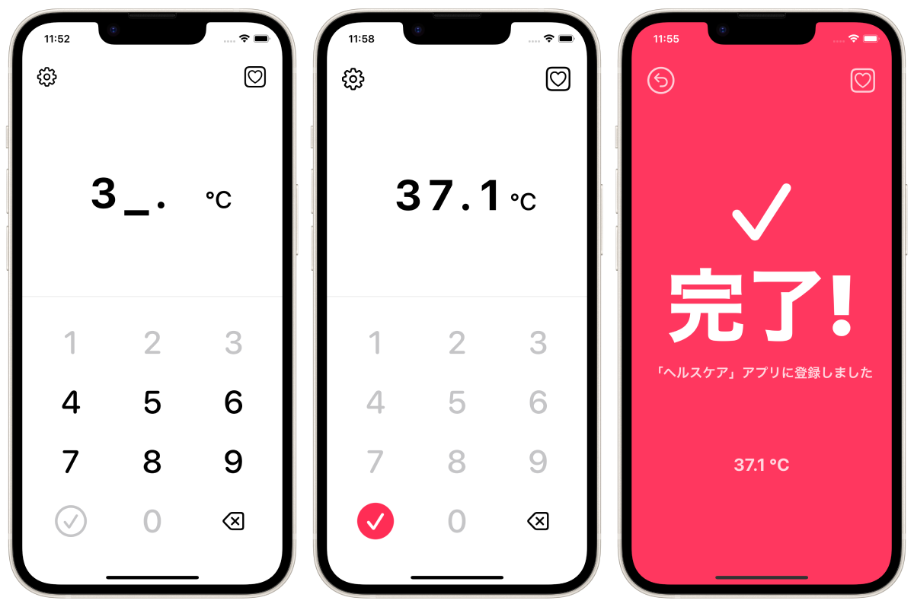

Register your body temperature in the Apple "Health Care" app as fast as possible!



This is an application for registering body temperature data to the Apple "Health Care" application preinstalled on the iPhone as fast as possible (as a manual method).
This app cannot read, view, or manage past data in the "Health Care" app. This app is intended only for data registration to the "Health Care" app. Please check the registered data on the "Health Care" application.
People frequently measure their body temperature (or basal body temperature) using thermometers on a daily basis. Many iPhone users register their body temperature (or basal body temperature) data on the "Health Care" application.
The best solution is to use a smart thermometer that works with the "Health Care" app and automatically saves the data, but they can be expensive and inaccessible. Although it is possible to manually register data in the "Health Care" app, unfortunately the "Health Care" app is not designed for routine manual registration of measurement data. Therefore, manually entering data that occurs continuously on a daily basis, such as body temperature measurements, can be a very time-consuming and stressful experience.
This application was developed to solve such problems.
Free of charge
Hide ads (160 yen)